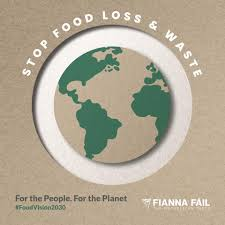

Food Vision 2030 maps out how Ireland plans to become a world leader in sustainable food by 2030. The strategy covers everything—primary agriculture, food processing, fisheries, forestry, and even the equine sector.
There are 22 specific goals, grouped under four main missions:

There are seven Goals in this Mission that aim to deliver a climate-neutral food system by 2050, with verifiable progress achieved by 2030, encompassing emissions reductions, carbon sequestration, improvements in air quality, restoration and enhancement of biodiversity, improvements in water quality, development of diverse forests, enhanced seafood sustainability, exploring the bioeconomy and strengthening Origin Green.
There are four Goals in this Mission which involve improving the competitiveness and productivity of primary producers, increasing the creation of value and distributing it fairly, introducing greater diversification in production systems and incomes, and improving the social sustainability of primary producers across areas such as generational renewal, gender balance, health and safety, mental health and wellbeing and rural development.
There are four Goals in this Mission that aim to prioritise coherent food and health policies for better health outcomes, enhance consumer trust in our food system, create value add through insight, innovation and product differentiation, and developing market and trade opportunities both at home and abroad.
The success of this Strategy will depend on effective implementation and oversight. For this reason, a Monitoring and Implementation Framework is included in the Strategy.